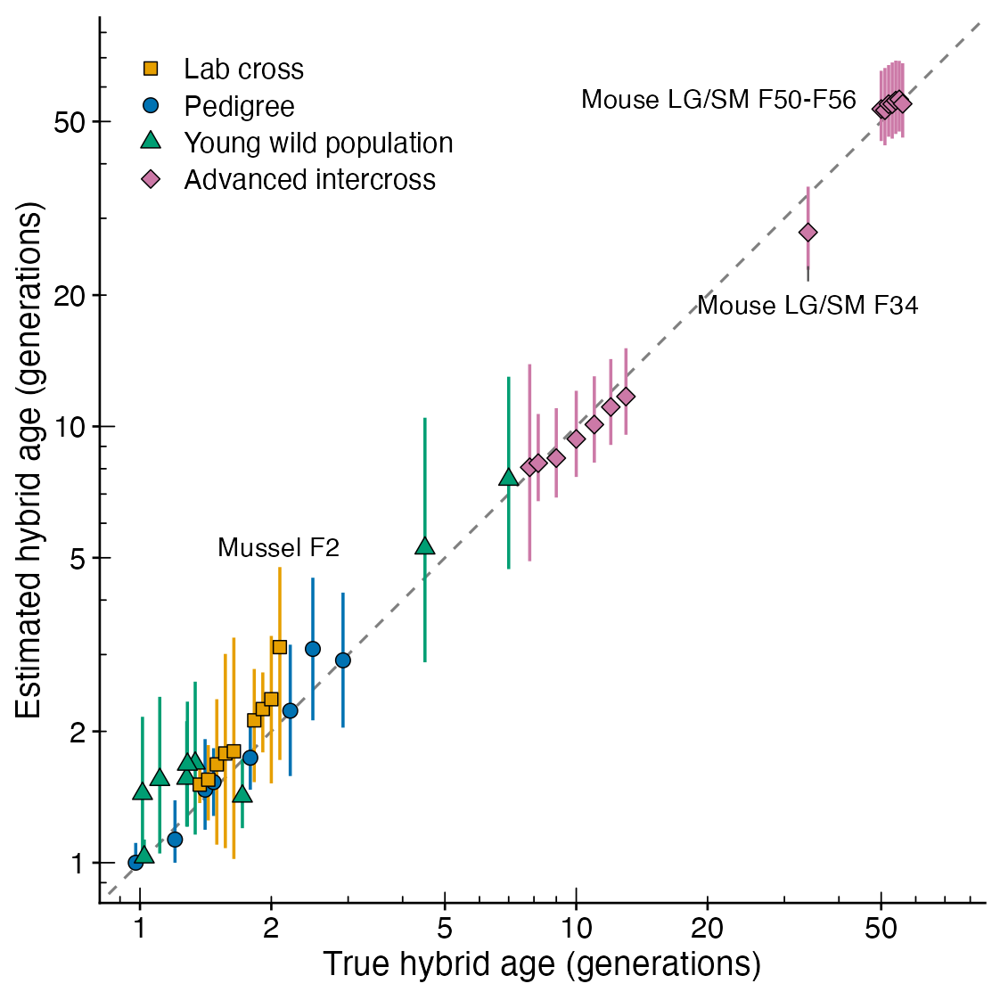

How long have hybrids been forming? Dating hybrid populations beyond F2, with or without a genetic map.
Tools such as NewHybrids and HIest classify individuals into the first two generations of hybridization. Beyond that, single individuals carry little information about age: many different pedigrees land in the same place on the hybrid triangle. A whole population sample carries much more. hybridclock compares the sample with forward-simulated hybrid populations that match the data and what is known about the study system, and estimates:
- hybrid age: the number of generations back to the nearest pure ancestor, averaged over the lines of each hybrid’s pedigree and over the hybrids in the sample;
- hybrid age of the rarer species’ lines: how long ago, on average, the rarer species’ genes entered;
- backcrosses: how many matings with pure individuals there have been since the first cross;
- whether pure individuals of the rarer species are still arriving, and at what rate.
Every estimate comes with a 90% interval calibrated on simulated histories that the model never saw. Recent hybrids (F1, F2, first and second backcrosses) are also classified one individual at a time, and the package reports the class-based answer when the simulations show it to be the more accurate one.
It works with diagnostic SNPs, SNPs that are not fixed between the species, and microsatellites; with or without a genetic map; and with natural contact, introductions, releases, lab crosses and advanced intercross lines, with or without continuing gene flow.

Installation
Install the development version from GitHub:
# install.packages("pak")
pak::pak("paulmaier/hybridclock")A quick look
library(hybridclock)
# diagnostic markers from two reference groups, and hybrid scores
mk <- diagnostic_markers(wolves$genotypes, wolves$groups, "ref1", "ref2")
sc <- hybrid_scores(wolves$genotypes, mk)
plot_triangle(sc, wolves$groups)
# recent hybrids, one individual at a time
table(studbook = wolves$animals$class, called = classify_hybrids(sc)$class)
# the population: simulate a reference that matches the data, train, estimate
hyb <- !wolves$groups %in% c("ref1", "ref2")
ref <- build_reference(n_sims = 6000, generations = 20, n_markers = nrow(mk),
sample_size = sum(hyb), cores = 4,
map = list(chromosomes = c(38, 38), length_cM = c(1800, 2400)))
clock <- train_clock(ref, cores = 4)
estimate_history(clock, sc[hyb, ], rep("hybrids", sum(hyb)),
diag = orient_genotypes(wolves$genotypes, mk)[hyb, ])The full tutorial runs the package on the five example datasets, one per common situation: a captive cross with a known pedigree (wolves), an advanced intercross with a genetic map (chickens), a closed population founded once (bettongs), a genetic rescue typed at microsatellites (possums), and an invasive hybrid zone with only an upper bound on age (carp). The getting-started vignette explains how to choose the settings and read the answer.
Choosing the settings
Describe what is known about the population, and keep the ranges generous:
- the design: pure founders for natural contact, F1 or backcross founders for crosses and hatchery populations, and whether the population is closed;
- a ceiling on the number of generations, from the earliest possible date of contact;
- the breeding size: in a closed population, after the first few generations the main clock is drift, and its pace depends on the number of breeders. Give the widest plausible range;
-
the map: the number of chromosomes and a range of total map lengths, or a real map with some uncertainty in its length (
map_scale).
A range that misses the truth gives precise but wrong answers; a generous one costs only precision. The information column of the answer shows how much of it comes from the data rather than from the settings.
Validation
hybridclock was validated on 23 published datasets in which the age of the hybrids is known exactly or bounded by a documented date of contact (Maier, in preparation). In 41 groups of known age, from F1 families to the 56th generation of an advanced intercross line, every 90% interval contained the true age. Young groups were dated within 0.26 generations on average, and intercross lines within 5.8%. Of 59 wild groups with an upper bound, 57 were estimated at or below it.
Citation
If you use hybridclock, please cite both:
- Maier PA, Mabe JA, Hale JL, Herman AE, Kantz BP (2024) Hybridization between Anaxyrus boreas × canorus within Eldorado National Forest: the first genomic assessment. Final report to the US Forest Service.
- Maier PA (2026) hybridclock: Dating hybrid populations beyond F2, with or without a genetic map. Manuscript in preparation.
citation("hybridclock") gives both entries.
Example data
The five example datasets are subsets of published data, recoded for the package, with their licences in inst/COPYRIGHTS: Mexican wolves (Fitak et al. 2018), chickens (Johnsson et al. 2016), burrowing bettongs (Rick et al. 2019), mountain pygmy possums (Weeks et al. 2017) and bighead × silver carp (Lamer et al. 2015). See the help page of each dataset for the full references.